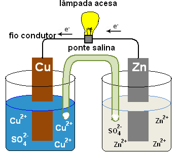

Em Ciências da Natureza nós vimos sobre a poluição no ar e no solo, como ela ocorre e o que poderia ser feito para diminui-la. Também vimos sobre genética nos seres, sobre o reino animal e vegetal.
Vimos sobre eletroquímica, oxirredução e química orgânica, que estuda os elementos que contém carbono em sua composição.

Também vimos sobre a radiação, como seus males e benefícios, vimos pela série Chernobyl como ela pode ajudar, mas ser fatal. Conhecemos também bastante sobre geração, transformação e conservação de energia, sendo elas energia eólica, solar e hídrica, então vimos como elas podem se transformar em outras energias e como elas podem ser conservadas e utilizadas pelos humanos.